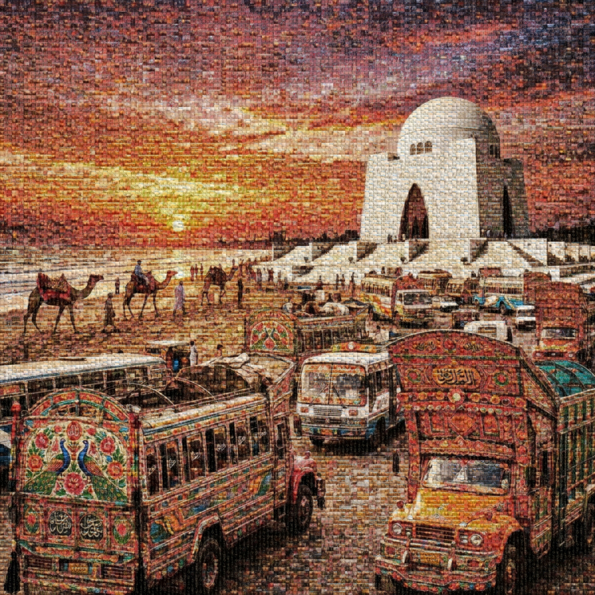
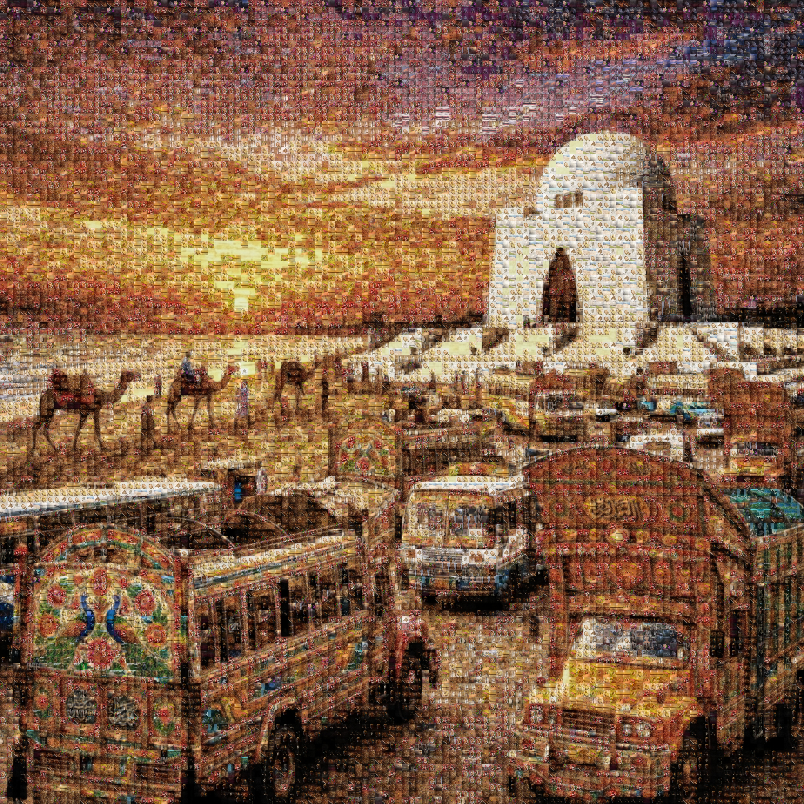

Digital
Alchemy.
What is a photomosaic? Often described as a picture composed of many smaller images, a true AI photomosaic is a masterpiece of digital sequencing. Move your cursor to illuminate how 10,000 memories converge into a single, high-resolution masterpiece.
How to Create a Photo Mosaic: The 3-Step AI Workflow
Collection
Upload your personal images. Our custom photo mosaic maker supports Windows, Mac, and Mobile via web-access.
Analysis
The AI performs a "Perceptual LAB" analysis, matching the hue and saturation of 10,000 tiles to your master portrait.
Render
Export a 300 DPI print-ready file. Aameeq is the top-rated photo mosaic software for high-fidelity results.
The Masterpiece Gallery
Technical benchmarks for high-fidelity printing. A top-rated mosaic maker for professional artists and corporate murals.

High Fidelity
300 DPI ExportWhy are mosaics so expensive? Precision. Every pixel is calculated to match your master portrait perfectly.

Balanced Logic
LAB Color SpaceHow much does a photo mosaic cost? Aameeq offers affordable premium rendering starting at $10.
The Authoritative Photomosaic FAQ
What is a synonym for photomosaic?
Commonly known as a picture mosaic, photographic tiling, or an image-composition mural. It is a single large image composed of many smaller images.
Where can I order custom photo mosaic prints in the US?
Aameeq exports print-ready 4K files. For physical prints, we recommend shipping your high-res export to US-based labs like Mpix or Nations Photo Lab for custom photo mosaic prints.
How much does it cost to print 1,000 photos?
Printing 1,000 individual 4x6 photos can cost over $200. A photo mosaic allows you to showcase all 1,000 memories in a single large-format print for as little as $15-$30, saving you hundreds in framing and space.
Is there free software to create photo mosaics?
While there are "free" tools online, they often watermark your images or lack the resolution for printing. Aameeq provides an affordable AI photo mosaic service that delivers professional-grade results.
How much to charge for mosaic art?
Professional digital artists often charge $150-$500 for a single custom mosaic. Aameeq's AI automation allows you to get the same personalized photo mosaic for under $10.
How do I add mosaic blur to a photo on iPhone?
Adding a "blur" is simple via the iPhone Markup tool, but creating a true photo mosaic requires an AI engine that matches personal images by color—something Aameeq's mobile-optimized web app handles perfectly.